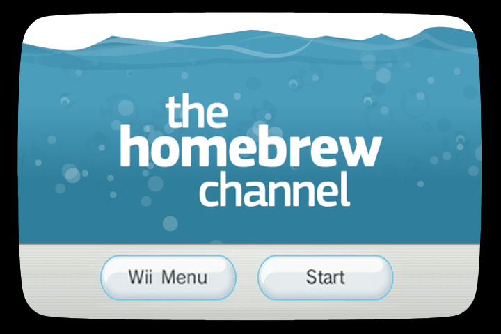

On May 2014, Nintendo stopped online gaming for games such as Mario Kart Wii or Super Smash Bros. Brawl. Since then, if you try to play online on these games, you will get an error like
Nintendo Wi-Fi Connection service for this software has been discontinued. Visit support.nintendo.com for a list of current Nintendo Wi-Fi Connection-compatible software.
Error Code: 20110
Of course, the "list of current [compatible] software" will point you to more recent games. This may or may not be an attempt from the company to push players to buy their latest games. Whatever it is, it shows the essential problem with centralized services: players still want to play (I do!) but Nintendo doesn't want to maintain the service forever. If the service had a decentralized structure instead of a centralized one, there would be no such problem: in a decentralized system, those who want to play are also those who put up the service.
Anyway, it is still possible to play Mario Kart Wii or Super Smash Bros. Brawl online. Here is how to do it.
Install Homebrew¶
The first step is to install the Homebrew channel on your Wii. You will need an SD card formatted as FAT (size doesn't matter: 8 MB is enough to install just the system; if you want to download games later, scale it up to gigabytes) and two pieces of information:
- the system version of your Wii (shown in the top-right corner of the Wii's System Settings)
- the MAC address of your Wii (shown in the Network settings)
If your system version starts with 4.3, go and fetch LetterBomb: input your system version and MAC address on this page, fill the captcha and cut the red wire. This will give you a ZIP archive that you can decompress at the root of your SD card.
Next, insert the SD card in your Wii and go to the Messages panel. At the date of today or yesterday, you should see a red enveloppe. Click it and follow the on-screen instructions to install the channel on your system.
If you don't see any message, it may be because you have the latest updates of the Wii system (Nintendo patched it to prevent players from installing Homebrew, thus keeping control of your system). In this case, go to the third page of system settings and revert to factory settings.
For step-by-step instructions with screenshots, you can check out this tutorial on about.com.

Install Wiimmfi¶
The people from wiimmfi.de put up an alternate gaming server where you can play Mario Kart Wii, Super Smash Bros. Brawl and Tatsunoko VS. Capcom: Ultimate All Stars. To use it,
- Download the autowiimmfipatcher (if this link doesn't work, here is the file I used).
- Extract its contents (apps and bslug folders) to the root of your SD card.
- Make sure your Wii is connected to your Wi-Fi router.
- Insert the SD card and game disc in your Wii.
- Launch Homebrew Channel and run the Auto Wiimmfi Patcher.
The patcher will eventually run the game. On a side note, you can also run games from other regions this way (e.g. a US version of SSBB can run on a European Wii).
On a side note¶
With the Homebrew channel installed on your Wii, you can do many things that were not allowed by Nintendo: play videos or DVDs with MPlayerWii, emulate previous consoles with e.g. Snes9x GX or Wii64, etc. In other words, you have gained more control over your device.
Discussion ¶
Feel free to post a comment by e-mail using the form below. Your e-mail address will not be disclosed.